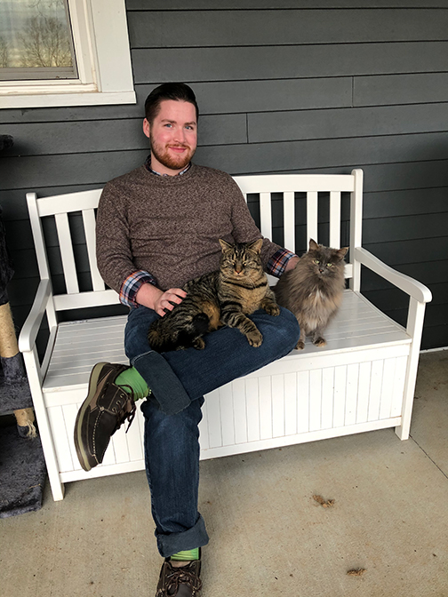

About Me
I am a senior at the University of Kentucky majoring in Information Communication Technology and minoring in History. Throughout college I have worked in several ICT-related positions, including electronics repair at Device Pitstop and helpdesk- and systems administration-related work at Compu-Tech Solutions, both here in Lexington, KY.
In my spare time, I enjoy messing with my personal gaming rig and server, as well as playing with the various cats and dogs in my life.
Feel free to peruse my Resume or my LinkedIn profile if you'd like to know more about my professional experience, or my Media page if you'd like a glimpse at some of my work (or cute animals)!
